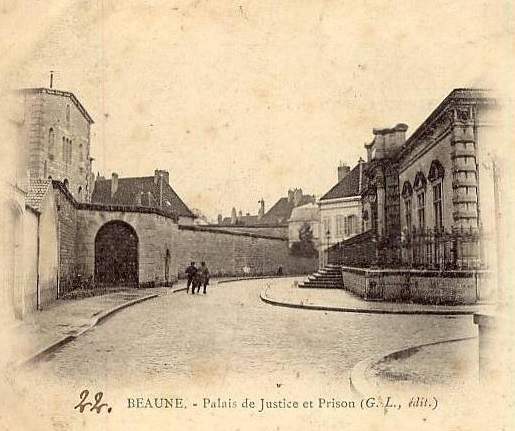
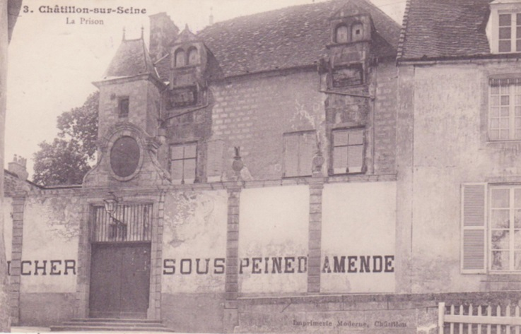
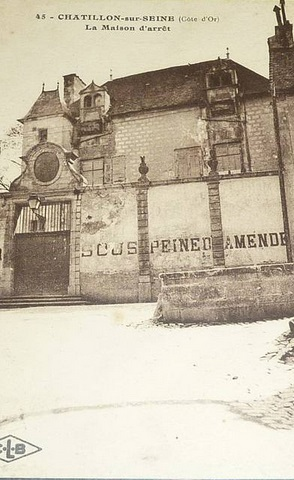
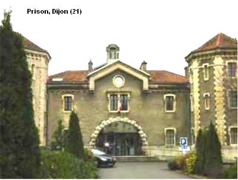
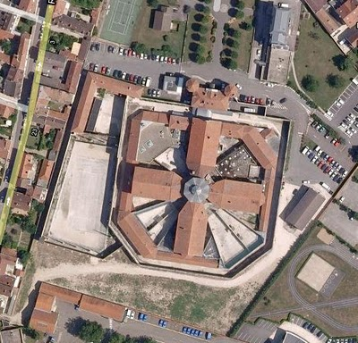
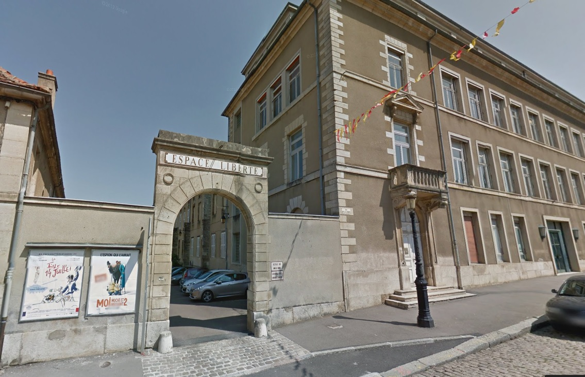

| Département | Images | Ville | Nom | Adresse | Période | Capacité | Histoire du lieu | Nombre d'exécutions |
| Côte-d'Or (21) |  |
Beaune | Maison d'arrêt | 3, rue du Tribunal | 1833-1968 | Face au palais de justice, avec lequel elle est reliée par un souterrain. La prison, fermée en 1952, est cependant réouverte le 1er juin 1955 dans un cadre résolument nouveau : celui de l'incarcération des détenus classés dangereux, agressifs ou bien trop susceptibles de s'évader, que l'on place à l'isolement 24 heures sur 24 : cette prison-mitard de 31 places est le premier Quartier de Haute Sécurité en France. Fermée en 1968, le QHS est transféré plus au sud, à Mende. Détruite en 1986 | Aucune exécution | |
| Côte-d'Or (21) |   |
Châtillon-sur-Seine | Maison d'arrêt | 11, rue des Avocats | -1926 | Monument historique depuis 2010. Actuelle bibliothèque municipale, depuis 1945, servant occasionnellement de salle d'exposition ou de spectacle. | Aucune exécution | |
| Côte-d'Or (21) |   |
Dijon | Maison d'arrêt | 72, rue d'Auxonne | En service depuis 1852 | 190 places (1962) 188 places (2015) |
||
| Côte-d'Or (21) |  |
Semur-en-Auxois | Maison d'arrêt | Place du Champ-de-Foire (25, rue de la Liberté) | 1860-1926 | Jusqu'en 1860, la prison se trouve dans le Donjon de la ville, plus précisement dans la tour Pin. Après, elle s'installe dans un bâtiment voisin du tribunal d'instance. Désaffecté, le bâtiment a laissé place à... "L'Espace Liberté", où se trouve le cinéma local et l'école de musique. | Aucune exécution |
{kind=link}
{kind=link}
{kind=link}
{kind=link}
{kind=link}
{kind=link}